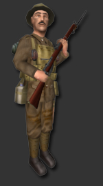

|
Welcome
to The Trenches: A World War I Half-Life modification! We are very
excited about the game’s premier on the international gaming stage
and would like to thank you for being one of our beta testers.
Basic controls
are listed under the “CONTROLS” options in the Steam menu, so this
brief manual will explain some of the functional nuances of The
Trenches that makes us different from other games.
Gameplay:
- back to top
The Trenches first Beta features 3 Gameplay Styles.
| tb_*: |
|
| |
Team Battle Mode. Basically something like the well-known
Team Deathmatch. 2 teams fight against each other. The team with
the most points at mapend wins. |
| tp_*: |
|
| |
Territorial Push Mode. In the maps are flags placed. The
teams have to capture the flags one after another. The team wich
captures and holds all flags wins. |
| tt_*: |
|
| |
Trench Capture Mode. In the trenches there are capture zones
wich need a different amount of people to capture. The teams
have to capture and hold all of these zones to win. |
The
HUD: -
back to top
|
1. |
Flags
/ Cap Zones Status Indicator. Wich Flag/Cap Zones is held by
wich team. White means no one captured it yet. |
|
2. |
First
number tells you how much people currently are in the Capture
Zone, Second tells you how much people are needed to capture it. |
|
3. |
Health indicator. All colored means you have got full health.
All grey means you are dead. |
|
4. |
Bullets in your rifle. The current Amount of bullets you have in
your rifle. |
|
5. |
Bullets left at all. Each pouch contains 10 Bullets. A closed
pouch contains 10 Bullets. A half opened one contains 5 Bullets
and an empty one contains none. Ammo counter is rounded up to
nearest 5 ones. |
|
6. |
This
tells you you are currently getting damaged. |
Movement:
- back to top
Players can advance, backpedal,
sprint, crouch, go prone, strafe, and use other movements during
combat. An invisible stamina meter keeps track of the player’s
stamina usage through jumping and sprinting. When your stamina is
low, you can hear a gasp sound that idicates your stamina is low,
and you should stop sprinting/jumping. This prevents players
from bunnyhopping as well as many
established speed exploits.
Being shot or hit by a grenade or even
lying down on the earth of the battlefield when a shell lands nearby
will jostle the screen. Aiming during this time period will be
virtually iimpossible. Wait to “recover” and then line up your shot!
You can't go prone everwhere, when you try to go in a crater, it
could happen that you can't, because there isnt enough space.
Player Classes:
- back to top
|
 |
British
Infantry:
Lee Enfield No.1 Mk.III*
2 Grenades |
|
|
British
Bomber:
Trench Club
6 Grenades |
|
|
German Infantry:
Mauser Gewehr 98
2 Grenades |
|
|
German Granatenwerfer:
Trench Club
6 Grenades |
Weapons:
- back to top
The
Trenches features conventional style numerical quick change buttons
by default. Weapons can also be changed with the mouse scroll. A
picture of the rifle will appear, and grenades, the rifle, or the
bayonet will be highlighted as if in a spotlight. This will select
the corresponding weapon. On occasion, the game displays the player
as having grenades when he has none left. When this is the case, the
game won’t allow the player to select a grenade, since he has used
them all.
Bolt action rifles must be cycled and reloaded manually.
Unlike other historical-based first person shooters, the bolt does
not cycle by itself. Hit the secondary fire key to work the bolt (traditionally,
this swings the bayonet). The player can work the bolt even when the
chambered round has not been fired. You will see the casing with the
bullet still inside if you worked the bolt without firing. However,
trying to fire without cycling a new round into the chamber will
result in an audible “click!” and no round will be fired. This
forces players to develop a good rhythm and immerse them into the
position of a rifleman. Additionally, the bayonet changes the stance
of the player and the position of the weapon. While in melee mode,
the rifle cannot be discharged even if an unfired round is in the
chamber. Remember to switch back to firing mode to discharge the
rifle.
The Grenades of
the different teams work completely different.
The british Grenade (called
"Mills Bomb") has 2 different fire Modes. When you selected it and
pressed the Primary Attack (by default Mouse 1), you will throw the
Grenade and 5 seconds after it'll explode. With Secondary Attack
(by default Mouse 2) you'll "cook off" the grenade, so the grenade
timer (5 seconds) will start while you're holding it in your hand. That'll give
the enemy a lower chance to run away from it's deadly explosion.
The German Grenade (called "Stick Grenade" or "Stielhandgranate")
has no secondary fire, it'll automatically "cook off" when you're
pressing Primary Attack, so the timer (5 and a half seconds) starts
at the moment you press Primary Fire. You better hurry!
Maps:
- back to top
|
|
The Germans have
sent troops through a narrow, mountainous
passage as a followup to a successful trench capture. Local
partisans have hastily constructed trenches for their British
allies: if the Germans manage to capture the bridge, all hope is
lost. Can the Germans make the most of their successful
offensive
or will they be beaten back by the British reinforcements? |
|
|
A quaint town
about fifty miles from the coastline, the small, unnamed French
village of Zorn has little tactical importance. The town is
primarily used bythe Allies, which control the port, as an area
of resupply. Battle wearied troops are also diverted here to
engage in more menial tasks until they are ready to return to
combat. The Germans have occupied the railway that used to run
through the village, and have camped about twenty miles away
from the area. The night before fighting began, the Germans
dispatched around 120 troops to raid the Allied area and to
disrupt supplies.
The British themselves lacked a secure position as,n two nights
previous, much of their force was diverted to reinforce the
Salient. After a light artillery bombardment, both the Allies
and Germans have set up imprompt trenches and much of the town's
population remains locked indoors or has evacuated. |
|
|
| A large slice of
Western Front combat. The remnants of a once pristine village
lie in the center of no man's land; most of the village has been
decimated to their foundations. Two large hills help to shelter
the main trench lines, which are very long and elaborate.
Sandbag bunkers and observation posts may be worth keeping a
guard in to observe enemy movement. Can you rally your forces to
capture the enemy's trench? Be careful, as an attack may prompt
a strong response by nearby reinforcements |
|
|
| An early autumn
morning on the Western Front. An eery mist covers the
battlefield and both armies are anxious. The battlefield has
fluctuated in territory since the beginning of spring and soon
the European winter will prevent further operations. Both German
and British commanders want control of the central trench line
before winter sets in. |
|
|
| Deep trenches
have been carved into the hilly landscape to protect soldiers
from artillery. The sharp turns and intricate trench lines means
anyone, friend or foe, may be around the next bend. Help repel
the enemy team and control the battlefield for victory. |
|
|
| The acute scale
of the austere seaside cliff has not discouraged the Great War
from moving into its territory. The British and Germans have
entrenched themselves on two small hills overlooking a small
valley. The last week has shown little activity on either side,
but reconnasaince flights indicate an increase in German
activity... |
|
|
Heavy shelling
from artillery on either side has created deep craters in no
man's land, obliterating any natural obstacle to bullets. Those
who venture into no man's land risk life and limb for an advance
on the enemy, and the downhill slope is perfect for grenades.
The pockmarked earth may be a gift from the heavens or a curse,
as grenades roll conveniently down the slope that leads into
no man's land. |
Face
Customization:
- back to top
While in The
Trenches your player model reflects the country you are fighting for,
yet the faces on the players are customizable. The Trenches offers a
variety of faces to differentiate your player on the battlefield.
You cannot see these changes yourself, only other players can. Go to
OPTIONS and CONTROLS to find the key you have assigned to face
selection.
Mp3
Player:
- back to top
The Trenches has
an integrated MP3 player. We encourage you to listen to some of the
provided ambient music created just for our game by former HALO
musician “PimpCat” as they have taken a very long time to make! The
player works like any common stereo, with play, stop, rewind, and
fast forward. To make your own playlist use the playlist maker to
edit the mp3.txt, located in the TT directory. However you can have
different playlists too, like mp3.txt, playlist2.txt
and so on. To load an other playlist, type "playlist
playlistname.txt" ingame into the console.
Creating
a listen server:
- back to top
Players
may create a non-dedicated, internet accessible server by going to
the CREATE GAME option. Change the basic parameters in the tab (such
as map, gametime, friendly fire, ect.) and hit OK. Open your console
and type sv_lan 0. Other players can connect to this server by
typing:
connect YOUR IP
HERE
into their
console. To find your I.P. address, go to
www.ipchicken.com and copy the number that appears. The default
port for these IPs is 27015 and so the omission of the port will not
affect the connection. Warning: non dedicated servers should be kept
to a small amount of players and should only be hosted on high speed
cable, DSL, or T1 lines.
Have
Fun! - back
to top
The Trenches is about a quality, entertaining gaming
experience. We encourage players to enjoy themselves through
recreational or competitive online gaming yet we discourage the rude
and elitist behavior that often accompanies this. Please, be fair to
“newbies” and help spread the game.
We
hope you enjoy the game and encourage your advice, observations, or
comments at our
message boards
or our
homepage.
|